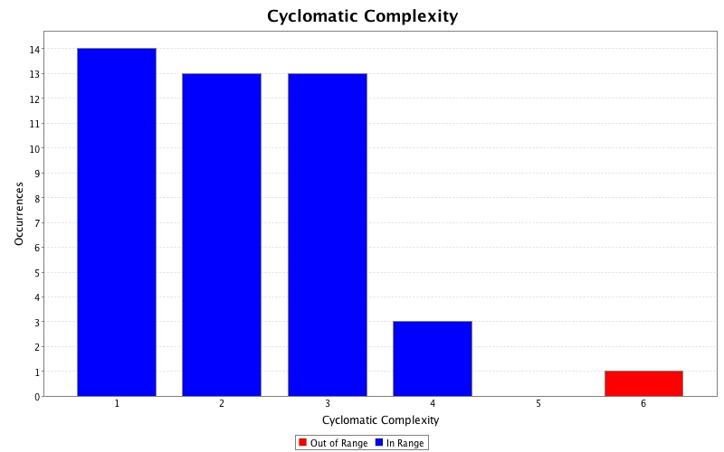

Produced by State Of Flow Eclipse Metrics on Sat Mar 08 13:51:13 BRT 2014
|  |
|
| CC (max) |
FE (max) |
LOCm (max) |
NLS (max) |
NOL (max) |
NOP (max) |
NOS (max) |
Ce | NOF | WMC | Line | Type | Package |
|---|---|---|---|---|---|---|---|---|---|---|---|---|
| 6 | 1 | 33 | 5 | 3 | 2 | 23 | 14 | 0 | 6 | 19 | CrawlJsoup | myWebCrawler |
| 4 | 0 | 24 | 5 | 4 | 2 | 17 | 13 | 0 | 16 | 15 | ReadAndWrite | genericInAnOutPut |
| 4 | 1 | 43 | 3 | 3 | 1 | 29 | 12 | 0 | 9 | 14 | HsStuttgart | hochschulen |
| 3 | 0 | 30 | 0 | 3 | 2 | 30 | 8 | 0 | 26 | 7 | Editor | editoren |
| 3 | 0 | 18 | 3 | 2 | 1 | 13 | 13 | 0 | 6 | 13 | Fbti | hochschulen |
| 3 | 0 | 18 | 3 | 2 | 1 | 13 | 12 | 0 | 5 | 13 | HsAlbSig | hochschulen |
| 3 | 0 | 17 | 3 | 2 | 1 | 16 | 12 | 0 | 5 | 13 | HsAugsburg | hochschulen |
| 3 | 0 | 18 | 3 | 2 | 1 | 11 | 10 | 0 | 5 | 16 | HsHof | hochschulen |
| 3 | 0 | 18 | 3 | 2 | 1 | 11 | 10 | 0 | 5 | 12 | HsNiederreihn | hochschulen |
| 3 | 0 | 18 | 3 | 3 | 1 | 11 | 8 | 1 | 4 | 12 | HsSalting | hochschulen |
| 3 | 1 | 30 | 3 | 3 | 1 | 17 | 11 | 0 | 8 | 13 | HsStrahlsund | hochschulen |
| 1 | - | 33 | 0 | 1 | 1 | 6 | 4 | 0 | 1 | 8 | FileContentEditorMain | editoren |
| 1 | - | 32 | 0 | 1 | 1 | 15 | 13 | 0 | 1 | 14 | StartCrawler | myWebCrawler |
| - | - | - | - | - | 1 | - | - | - | - | 13 | HsSaltingInterface | hochschulen |
| - | - | - | - | - | 2 | - | - | - | - | 8 | CrawlerInterface | myWebCrawler |
Produced by State Of Flow Eclipse Metrics on Sat Mar 08 13:51:13 BRT 2014